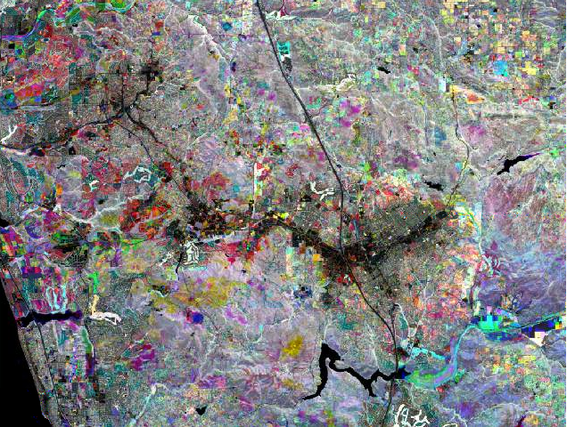

Select all three NDVI layers by clicking on NDVI_composite_march_1984.img, then holding down the SHIFT key and clicking on NDVI_composite_april_2011.img. Make a composite by clicking on the "Composite Bands" button.
When you're done, the composite should look like this:
Color is now indicating patterns of change in vegetation cover over time. To see how to interpret the colors, move on to Step 4.